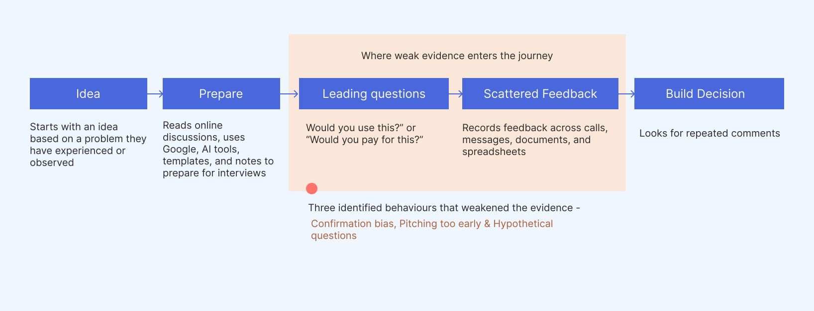
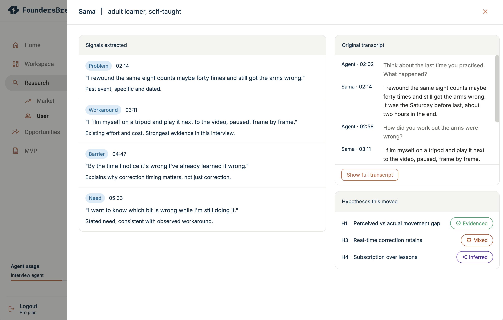
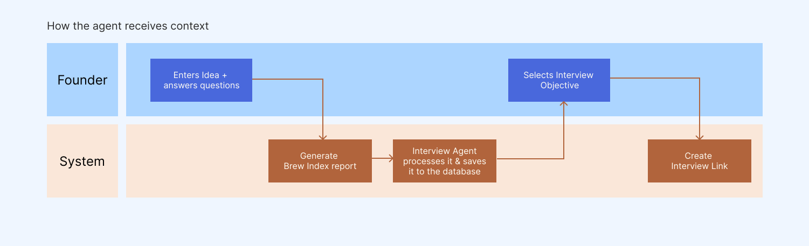
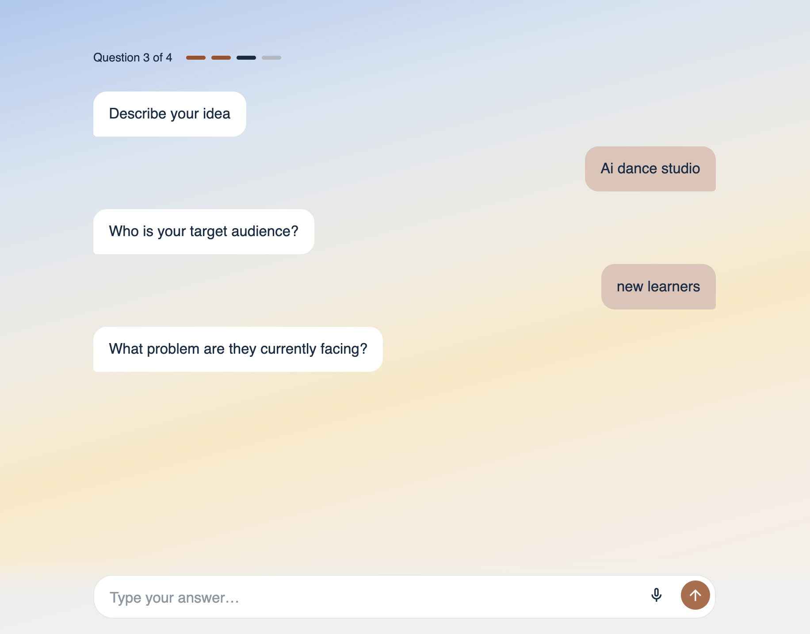
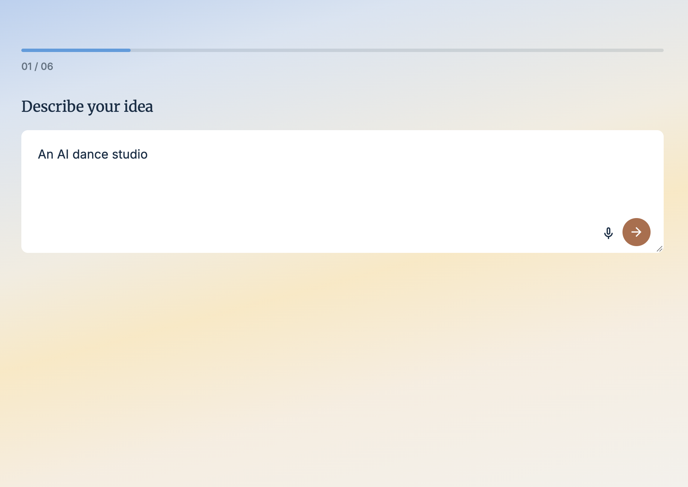
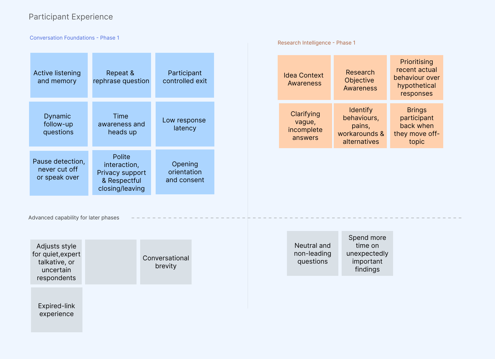
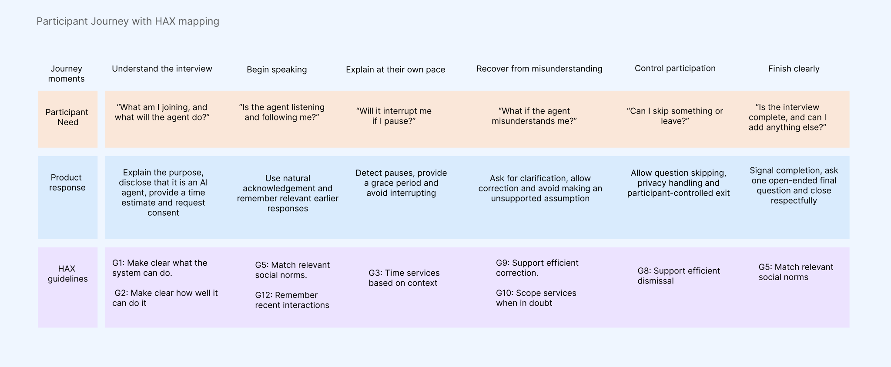
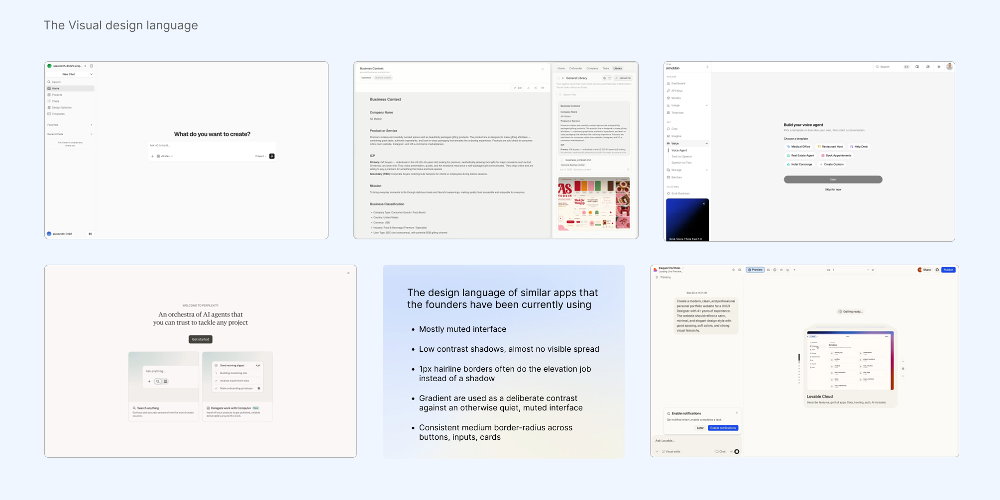

From conversations to structured evidence for founders
The problem
The journey from idea to MVP puts a lot of focus on discovery. If founders focus on the wrong thing, they will end up building the wrong product, and founders were hearing encouragement, not evidence.
Biased information = biased decision

The static guide
The first version I made was a static interview guide for founders which they can use during the interview. It initially helped founders prepare a structured set of interview questions. It improved preparation, but the guide could not adapt once the conversation started.
The real challenge was adapting the interview in the moment.
The solution
An interview agent that adapts to the conversation. FoundersBrew uses the founder's context and research objectives to guide the interview, then adapts its follow-up questions based on what the participant says.
Founder context
Founder answers a few questions.
Adaptive interview
The agent asks, listens, probes and clarifies.

Evidence
Signals and patterns.

Outcome
From a question guide to an evidence system.
The directional landscape

Human in the loop
The agent build context based on questions answered by the founder and a deep secondary research done by an automated workflow. The system ranks the assumptions, it tells which is the most riskiest assumption, however the founder decides what to probe first.

How founders answers the question
I first designed the interaction like a chat experience, similar to the current AI tools and created a quick prototype to test with some of the founders, but when they interacted with it we found that instead of benefitting from a similar experience the users mental model was challenged. So when designing the experience I used a progressive questionnaire.


Setting up the interview
FoundersBrew creates hypothesis based on findings from founders input and its own research workflow. The system ranks the hypothesis and the riskiest is at the top, however the founder can choose which to test first.
The interview experience
When I was designing the interview experience, I first wrote down how the experience feels like when I conduct a one-to-one user interview, and prioritised what should go in phase one and what can wait, based on what people expect from an agent.

Mapping the users journey with HAX
While defining the interview experience I referred to the HAX guideline from Microsoft to define how the system should behave. This adaption is at a very beginning stage and will grow as the FoundersBrew agent becomes more capable.

But will people talk to an agent?
When the agent first came up my first instinct was to question if people will talk to the agent and the findings specifically in the North American region show that research teams running short, adaptive AI interviews report completion rates between 54% and 72%, compared with about 33% across survey channels, which was encouraging combined with signals from our competitors.
How conversation drive progress
The system tells the founder what their next best step is, based on the conversation and the signals and patterns derived from it.
From signals to patterns
I spoke to founders working with FoundersBrew offline and understood that this system should be extremely simple for founders. They are not researchers, they only needed to know which of their assumptions were validated, what was challenged, and what behaviour was still left to test. They can then decide what to do next.
The agent workflow
In this work this is the piece that took me beyond UX to really think about how the agent architecture should look like. How would the classification happen, what parameters to check the bias and what deterministic logic to write.
The visual direction

Reflection
Clarity comes through actions. There were a lot of unknowns, but a step by step structured approach becomes important to overcome ambiguity.